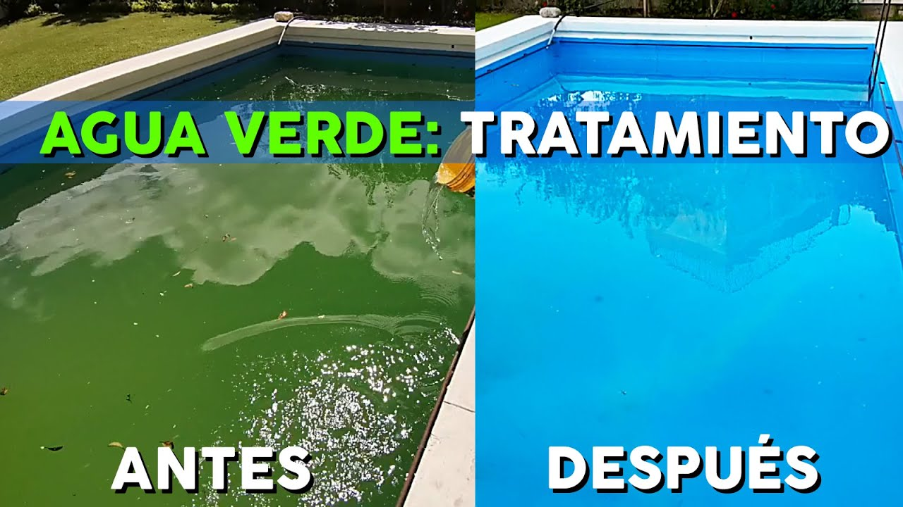

Evitar que el agua se ponga verde
Mantenga niveles adecuados de desinfectante (cloro o bromo) para prevenir el crecimiento de algas y bacterias.
Verifique y ajuste regularmente los niveles de pH, alcalinidad y dureza del agua para evitar desequilibrios químicos.
Limpie o reemplace regularmente los cartuchos del filtro y realice el lavado y enjuague adecuados para el filtro de arena.
Realice una limpieza regular de la superficie y el fondo de la piscina para evitar la acumulación de desechos y contaminantes.
Verifique el funcionamiento correcto de la bomba y los sistemas de filtración para asegurar una circulación adecuada del agua.
Considere cubrir la piscina durante lluvias intensas o ajuste los niveles de productos químicos después de un evento climático.
Siga un programa de mantenimiento regular y realice las tareas necesarias para mantener la piscina en buen estado.
